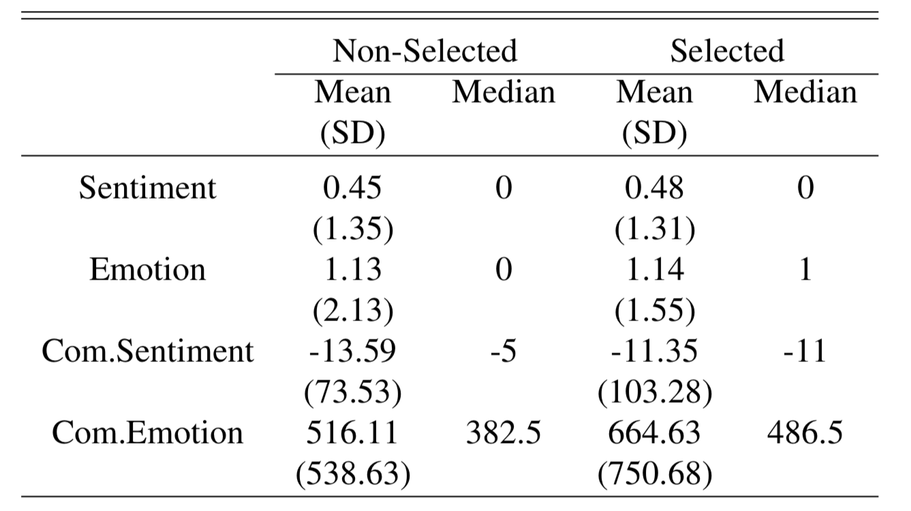

A Bootstrapping Approach to Assessing the Bias of Facebook’s Graph API
Justin Chun-ting Ho
University of Edinburgh
Changes in Graph API
- 7 November 2017,
Facebook introduced a new limitation
- The API will only return a maximum of
“600 ranked, published posts per year”
- How these posts are selected is currently unknown
Reverse Engineering the Ranking Method
Sentiment and Emotion Scores

Findings
- Photo and Video over-represented; Link under-represented
- Over-representation of posts with high Shares and Likes on Comments, but not Likes and Comments
- Bias in top terms
- Bias in emotional words usage
Implications
- Under-representation of Link posts means that a significant amount of link-sharing activities would become invisible
- Highly commented and liked posts might not be selected due to the effect of other features
- Potential bias in text models
- The new API tends to return posts with more emotional texts
Thank You!
Twitter: @justin_ct_ho
Github: justinchuntingho
Email: Justin.Ho@ed.ac.uk